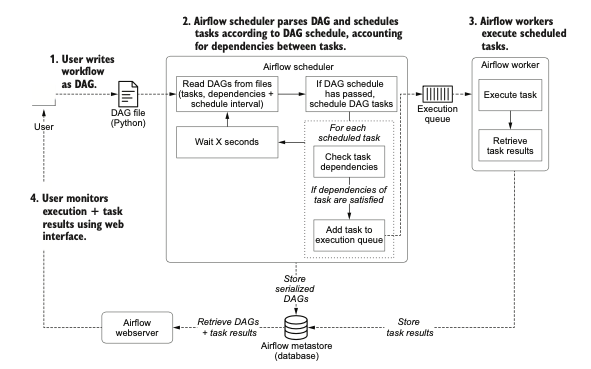
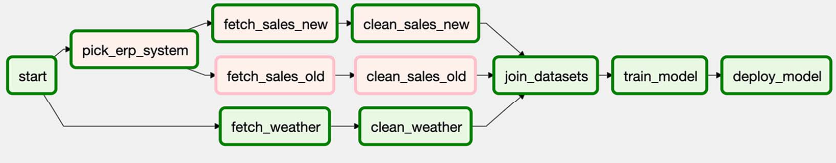
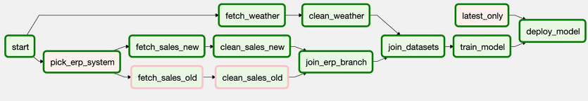
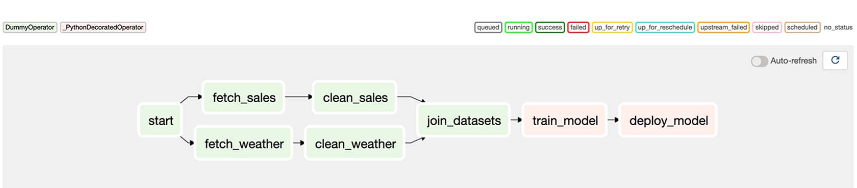
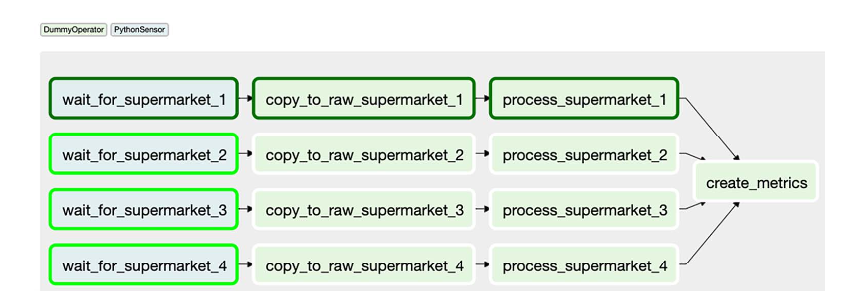
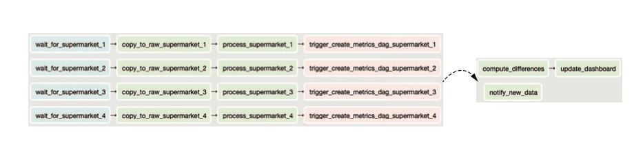
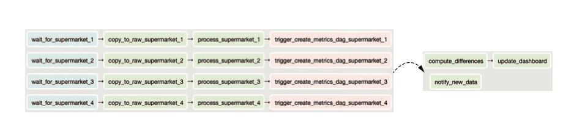
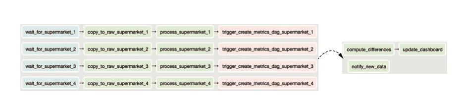

Airflow is workflow orchestration tool that is written in Python at Airbnb. The workflow is also written in Python. It defines the workflow as a DAG so it is easy to determine the dependencies between tasks. If any task failed, we don’t need to rerun the workflow again, we can just run the failed task and all the tasks that depend on it. We can also do backfilling by running the pipeline/tasks for time intervals in the past.
Airflow consists of mainly three components: - The Airflow scheduler: Parses DAGs, checks their schedule interval, and (if the DAGs’ schedule has passed) starts scheduling the DAGs’ tasks for execution by passing them to the Airflow workers. - The Airflow workers: Pick up tasks that are scheduled for execution and execute them. As such, the workers are responsible for actually “doing the work.” - The Airflow webserver: Visualizes the DAGs parsed by the scheduler and provides the main interface for users to monitor DAG runs and their results. It uses the metadata database which has all the logs and other metadata about tasks and workflows.
Conceptually, the scheduling algorithm follows the following steps: - For each open (= uncompleted) task in the graph, do the following: – For each edge pointing toward the task, check if the “upstream” task on the other end of the edge has been completed. – If all upstream tasks have been completed, add the task under consideration to a queue of tasks to be executed. 2. Execute the tasks in the execution queue, marking them completed once they finish performing their work. 3. Jump back to step 1 and repeat until all tasks in the graph have been completed.
The scheduler in Airflow runs roughly through the following steps: 1. Once users have written their workflows as DAGs, the files containing these DAGs are read by the scheduler to extract the corresponding tasks, dependen- cies, and schedule interval of each DAG. 2. For each DAG, the scheduler then checks whether the schedule interval for the DAG has passed since the last time it was read. If so, the tasks in the DAG are scheduled for execution. 3. For each scheduled task, the scheduler then checks whether the dependencies (= upstream tasks) of the task have been completed. If so, the task is added to the execution queue. 4. The scheduler waits for several moments before starting a new loop by jumping back to step 1.

Airflow can be run: 1. In python virtual environment 2. Inside Docker containers. In this case, Airflow scheduler, webserver, and metastore would run each in separate containers
The main disadvantages of Airflow are: 1. It can get very messy and hard to understand for complex workflows 2. It is best used for batch/recurring jobs NOT streaming jobs 3. Mainly support static DAGs and hard to implement dynamic DAGs. Imagine you’re reading from a database and you want to create a step to process each record in the database (e.g. to make a prediction), but you don’t know in advance how many records there are in the database, Airflow won’t be able to handle that. 4. It is monolithic, which means it packages the entire workflow into one container. If two different steps in your workflow have different requirements, you can, in theory, create different containers for them using Airflow’s DockerOperator, but it’s not that easy to do so. 5. Airflow’s DAGs are not parameterized, which means you can’t pass parameters into your workflows. So if you want to run the same model with different learning rates, you’ll have to create different workflows.
Airflow DAG
DAG() class is needed to instantiate a DAG which will be the starting point of any workflow.
The required arguments are: dag_id which is the name Airflow web UI uses to display workflow. start_date which is when to start running the workflow, it can be in the past
There are other arguments such as schedule_interval which determines the schedule to rerun the DAG
Operator is responsible for a piece of work and almost represents a task.
It has task_id which is the name web UI uses to display the task
There are many operators such as BashOperator, PythonOperator … All of them inherits from BaseOperator
Some operators are generic such as BashOperator and some are specific such as EmailOperator
Task is a wrapper/manager over operator that makes sure the operator gets executed
>> represents the dependencies between tasks
a >> b means a should run before b
Airflow UI offers two views:
tree view that shows the DAG runs over time. Each column is one run. Each row is a task. So we can inspect status of tasks over time
graph view that shows the DAG as a graph which helps showing the dependencies of tasks in the workflow
If any task failed, all successive tasks that depend on it don’t run
We can rerun the failed tasks (which also would cause successive tasks to rerun) w/o having to rerun the workflow from scratch
We can inspect the logs to see what was the reason for the errors
Tasks can run in parallel depending on their dependencies
To setup Airflow locally inside Python virtual env:
pip install apache-airflow
airflow init db # Initialize metastore locally using SQLite; not recommended for production
Airflow will schedule the first execution of DAG at the end of the interval; which means after the last time point in the interval has passed. For example, if we schedule it to run @daily, it will run t midnight of each day starting from the start_date until (optionally) end_date. In other words, as soon as 23:59:59 has passed which means any time after 00:00:00.
Example: if start_date=“2022-01-01” and schedule_interval=“@daily” -> The first time it runs is any time soon after “2022-01-02 00:00” which is midnight of January second.
We can use convenience string (such as @daily), timedetla objects (such as timedelta(days=3), or cron expressions (such as 0 0 * * 0 which means weekly on Sunday 00:00)
Frequency scheduling intervals (shorthands):
@once: Schedule once and only once.
@hourly: Run once an hour at the beginning of the hour.
@daily: Run once a day at midnight.
@weekly: Run once a week at midnight on Sunday morning.
@monthly: Run once a month at midnight on the first day of the month. Run once a year at midnight on January 1.
- "*" means don't care values.
- Examples:
1. 0**** means hourly
2. 00*** means daily at midnight
3. 00**0 means weekly at midnight on Sunday
- Useful link to check meaning of cron-based intervals: https://crontab.guru/
Cron expressions have limitations when trying to specify frequency-based intervals such as every three days. The reason for this behavior is that cron expressions are stateless and don’t look at previous runs to determine next run, they only look at the current time to see if it matches the expression.
Airflow allows us to use frequency-based intervals using timedelta from datetime library. This way we can use previous run to determine the next run.
Example: schedule_interval=“timedelta(days=3)” means to run every 3 days after start_date.
We can use dynamic time reference that uses execution dates which allows us to do the work incrementally. Airflow will pass those dates to the tasks to determine which schedule interval is being executed.
execution_date is a timestamp of the start time of the schedule interval
next_execution_date is a timestamp of the end time of the schedule interval
previous_execution_date is a timestamp of the start time of the previous schedule interval
Or we can use shorthands: bash fetch_events = BashOperator( task_id="fetch_events", bash_command=( "mkdir -p /data && " "curl -o /data/events.json " "http://localhost:5000/events?" "start_date={{ds}}" "&end_date={{next_ds}}" ), dag=dag, )
ds has YYYY-MM-DD format while ds_nodash has YYYYMMDD format
Shorthands: ds, ds_nodash, next_ds, next_ds_nodash, ps, ps_nodash execution date of the next interval.
We can also use dates or any dynamic parameters to Python function using templates_dict argument and the python callable will be passed the context that has the templates_dict For example: bash calculate_stats = PythonOperator( task_id="calculate_stats", python_callable=_calculate_stats, templates_dict={ "input_path": "/data/events/{{ds}}.json", "output_path": "/data/stats/{{ds}}.csv", }, dag=dag )python def _calculate_stats(**context): """Calculates event statistics.""" input_path = context["templates_dict"]["input_path"] output_path = context["templates_dict"]["output_path"]
Because Airlfow follows Interval-Based Scheduling, that means DAGs run only after the last time point of schedule interval passed. If we run the DAG daily starting from 2022-01-01, the first time it runs is soon after 2022-01-02 00:00:00 has passed and the execution_date would be 2022-01-01 even though it is running in 2022-01-02. This is because it is running for the corresponding interval.
The end of the previous interval is execution_date
One caveat for this is that previous_execution_date and next_execution_date are only defined for DAGs that run on schedule interval. This means that those values are undefined when the DAGs are run from the UI or CLI
Airflow allows us to have start_date in the past. This will help us in backfilling. By default, Airflow will run all the schedule intervals from the past until current time once the DAG is activated. We can control this behavior using catchup parameter to the DAG() class. If we set it to False, it won’t run previous schedule intervals.
Backfilling is also helpful if we change the code for the DAG. It would run all previous schedules after we clear them.
Best Practices:
Task needs to be atomic which means a single coherent unit of work. This allows us to split work into smaller units where if one fails we know exactly what is it and recover easily.
Task needs to be idempotent which means it has no side effects on the system when it reruns. If the task is given the same input, it should produce the same output.
In database systems, we can use upsert, which allows us to overwrite existing row.
When writing to files, make sure that rerunning the same task for the same interval don’t write data again. Append doesn’t let us make the task idempotent.
Task Context & Jinja Templating
Airflow uses Pendulum library for datetimes. It is a drop-in replacement to the Python standard library datetime but with much nicer API and more features.
Not all arguments can be templates. By default, all arguments are not made into templates and {{name}} will be read as a literal string name unless it is included in template_fields in the list of attributes that can be templated in the Operator.
Elements in the template_fields are names for class attributes. The arguments passed to the __init__ match the class attributes.
All operators; such as BashOperator, take their argument as string except PythonOperator. It takes its argument as python_callable, which is any callable object in Python. The context and parameters will be available to this callable.
The context variable is a dictionary that has all the instance variables for this task.
we can use default **kwargs or make it easier to read using **context
If we specify argument name in the python_callable, then Airflow will call the python_callable with all the variables in the context.
If a variable is specified as argument by the callable, then it is passed to the callabe
Otherwise, it is added to the context dictionary. If we don’t have context dictionary as an argument for the callable, then all other variables in the context that are not specified as arguments will be discarded.
- We can later refer to those credentions by name when connecting to any database
- Airflow takes care of setting up the connection and close it once done
Postgres is an external system and Airflow supports connecting to a wide range of external systems with the help of many operators in its ecosystem. This does have an implication: connecting to an external system often requires specific dependencies to be installed, which allow connecting and communicating with the external system. This also holds for Postgres; we must install the package apache-airflow-providers- postgres to install additional Postgres dependencies in our Airflow installation.
Upon execution of the PostgresOperator, a number of things happen. The PostgresOperator will instantiate a so-called hook to communicate with Postgres. The hook deals with creating a connection, sending queries to Postgres and closing the connection afterward. The operator is merely passing through the request from the user to the hook in this situation.
An operator determines what has to be done; a hook determines how to do something. When building pipelines like these, you will only deal with operators and have no notion of any hooks, because hooks are used internally in operators.
There’s a number of things to point out in this last step. The DAG has an additional argument: template_searchpath. Besides a string INSERT INTO …, the content of files can also be templated. Each operator can read and template files with specific extensions by providing the file path to the operator. In the case of the Postgres- Operator, the argument SQL can be templated and thus a path to a file holding a SQL query can also be provided. Any filepath ending in .sql will be read, templates in the file will be rendered, and the queries in the file will be executed by the PostgresOperator. Again, refer to the documentation of the operators and check the field template_ext, which holds the file extensions that can be templated by the operator.
Jinja requires you to provide the path to search for files that can be templated. By default, only the path of the DAG file is searched for, but since we’ve stored it in /tmp, Jinja won’t find it. To add paths for Jinja to search, set the argument template_searchpath on the DAG and Jinja will traverse the default path plus additional provided paths to search for.
Dependencies Between Tasks
Dependencies in airflow is specified using the right shift symbol >>. It tells Airflow which tasks should be run first before running other tasks.
Basic Dependenices:
Linear dependenies: a >> b >> c. This means that a has to run before b which should run before c. If any task fails, the downstream task won’t run and the errors are propagated to them from preceding tasks. They can only run after the errors are fixed for that interval.
Fan-in/Fan-out dependencies:
Fan-in: When 1 task is dependent on >= 2 tasks to run. join_datasets is fan-in task. Fan-in tasks can be specified as: [clean_sales, clean_weather] >> join_datasets
Fan-out: When >= 2 tasks are dependent on 1 task to run. start is a fan-out task. Fan-out tasks can be specified as: start >> [fetch_sales, fetch_weather]
This is how we can specify dependencies for the DAG in the above picture:
We can take care of conditional execution of code paths inside the task, i.e. inside Python script in the case of PythonOperator. Depending on some condition during execution, different code paths and logic will be followed. The main disadvantages of this approach is that 1) it is hard to figure out with code path is being executed on each run from tree/graph view unless we have logging enabled, 2) Adds more complexity to the code structure, 3) May not let us use specialized operators that abstract aways a lot of the boilerplate code such as PostgresOperator. For example, if we have fetch data from either CSV or SQL database depending on condition at execution.
We can add BrachPythonOperatortask that takes a Python callable to determine which tasks to execute next. The Python callable has to return the task_id of the task (or list of task_id) that Airflow should execute next. Example: 
Since downstream tasks only get scheduled & executed if all thier downstream tasks finished successfully, jon_datasets task will never success because with the above dependency either clean_sales_old or clean_sales_new would execute BUT NOT BOTH. We can adjust this using trigger_rule argument (default is "all_success" in the operatror by specifying "non_failed". This will run downstream task if all downstream tasks haven’t failed even if they never executed. Therefore, we can change trigger_rule for join_datasest task.
A better approach is to create DummyOperator that does nothing but join both branches and become the upstream task before join_datasets such as below:
Conditional tasks. Sometimes we only want to execute a task if a condition is true, otherwise, the task should be skipped. For example, if we want to only deploy the model on the most recent data and we don’t want deploy_model to always execute if we are doing backfilling -> Create a conditional upstream task that checks the condition and raise Exception if the condition is False so deploy_model will be skipped. 
from airflow.exceptions import AirflowSkipExceptionfrom airflow.operators.python import PythonOperatordef _latest_only(**context):# execution_time is the first time in the schedule interval# So following_schedule is the next execution_date left_window = context["dag"].following_schedule(context["execution_date"]) right_window = context["dag"].following_schedule(left_window) now = pendulum.now("utc")# Since execution of DAG starts after last time point passed of the # schedule interval -> ifnot left_window < now <= right_window:raise AirflowSkipException("Not the most recent run!") latest_only = PythonOperator(task_id="latest_only", python_callable=_latest_only, dag=dag) latest_only >> deplpy_model
Trigger rules: The triggering of Airflow tasks is controlled by the trigger rules which define the behavior of tasks and allow us to configure each task to respond to different situations.
Be default, scheduler picks tasks ready to be executed when all its upstreams tasks were executed successfully and put it in the execute queue. The scheduler always checks downstream tasks if they are ready by checking all their downstream task completion state. Once there is a slot/worker, it will be executed. If any of the upstream tasks failed, it would have failed state and the upstream task won’t be scheduled and have state=upstream_failed. This is called progagation because the error is propagated from upstream to downstream tasks. This is the default trigger_rule which is all_success. If any of the down
If any of the upstream task is skipped -> downstream task will be skipped as well (propagation).
Trigger rules:
all_success: Triggers when all parent tasks have executed successfully
all_failed: Triggers when all parent tasks have failed or due to failure in their parents
all_done: Triggers when all parent tasks finished executing regardless of their state. Good to cleanup and shutdown resources regardless of the execution state of the workflow
one_failed: Triggers when at least 1 parent task failed and doesn’t wait for other parent tasks to finish
one_success: Triggers when at least 1 parent task succeeded and doesn’t wait for other parent tasks to finish
none_failed: Triggers if no parent task has failed but either completed successfully or skipped
none_skipped: Triggers if no parent task has skipped but either completed successfully or failed
dummy: Triggers regardless of the parent tasks state. Useful for testing
Sharing data between tasks using XComs
It is meant to exchange messages between tasks, which is some form of shared state
We can use dag instance to push/pull data between tasks:
conext["dag_instance"].xcom_push(key="data_name", value="value") to push data to metastore. It also store the dag_id, task_id, & execution_date.
conext["dag_instance"].xcom_pull(key="data_name") which pull the shared data. We can also specify dag_id and execution_date.
We can also access push/pull methods in templates using task_instance.xcom_push() or task_instance.xcom_pull()
We can view the shared data on the UI by going to Admin -> XComs
Limitations:
XComs data will be pickled and stored in the database -> The objects have to be serializable
Size limitations:
SQLite—Stored as BLOB type, 2GB limit
PostgreSQL—Stored as BYTEA type, 1 GB limit
MySQL—Stored as BLOB type, 64 KB limit
It create hidden dependency between tasks because now the task the pushes the shared state has to push the data before the task that pulls the data. Airflow won’t manage/respect this dependency the developer has to document this and make sure this is not an issue based on the tasks’ order
Due to its limitations in terms of size, we can create custom backends for XComs by defining a class that inherits from BaseXCom and implements two static methods. Airflow will use this class. It can be added to xcom_backend parameter in the Airflow configWe can use cheap/large storage services on the cloud such as Amazon S3, Azure Blob Storage, or Google GCS.
If most of tasks are PythonOperators, we can use Taskflow API that takes care of passing state between tasks and avoid the boilerplate code that we have to write with regular API. We need to just decorate the function that we use in the PythonOperator with @task and Airflow will take care of the rest by passed XCom data between tasks. Example:

from airflow.decorators import taskwith DAG(...) as dag: start = DummyOperator(task_id="start") start >> fetch_sales start >> fetch_weather fetch_sales >> clean_sales fetch_weather >> clean_weather [clean_sales, clean_weather] >> join_datasets@taskdef train_model(): model_id =str(uuid.uuid4())# Airflow will figure out that the return value is XCom# and would take care of pushing itreturn model_id@taskdef deploy_model(model_id: str):# Airflow would realize that this task uses XCom so it passes# it from XComprint(f"Deploying model {model_id}")model_id = train_model()deploy_model(model_id)# Now train_model and deploy_model will be new tasks# with explicit dependeny. # The task type is PythonDecoratedOperatorjoin_datasets >> model_id
Any data passed between Taskflow-style tasks will be stored as XComs and subject to the same limitations of XCom
The main limitation of Taskflow API is that it is still only for PythonOperators
Triggering Workflows
Workflows are most commonly triggered based on schedule intervals provided using start_date, end_date , schedule_interval. Airflow would calculate when the next schedule would be and start the first task(s) to run at the next data/time.
However, sometimes we want the workflow to run based on the occurance of external events such as a file is available in specific location OR code is changed on git repo etc.
One way to execute workflows based on the occurance of external exents is using Airflow’s sensors. Sensor is a subclass of operators that checks if certain condition is true. If true, execute the step (workflow). If false, wait for a given period (default 60 seconds) and tries again. It keeps doing so for timeout period. This is a form of Poking, which is checking for the existence of file in the case of FileSensor.
from airflow.sensors.filesystem import FileSensorwait_for_file_1 = FileSensor( task_id="wait_for_file_1", filepath="/data/file_1.csv" )
We can also use globbing with FileSensors by using wildcards to check for the existence of file(s)
We can also use PythonSensor which checks for certain condition and must return a Boolean. It is more flexible and easier to read than using globbing within FileSensor. It is the same as PythonOperator in terms of taking a Python callable
from pathlib import Pathfrom airflow.sensors.python import PythonSensor# Check whether there is any data for a given supermarker# and there is _SUCCESS path which indicates whether the # data for the given supermarket is all uploadeddef _wait_for_supermarket(supermarket): supermarket_path = Path("/data") / supermarket success_path = Path("/data") /"_SUCCESS" data_files = supermarketpath.glob("*.csv")return data_files and success_path.exists()wait_for_supermarket_1 = PythonSensor( task_id="wait_for_supermarket_1", python_callable=_wait_for_supermarket, op_kwargs={"supermarket": "supermarket_1"}, dag=dag )

All sensors take a timeout arguments, which has default value of 7 days
There is also a limit on the number of tasks Airflow can run concurrently per DAG (default is 16). DAG takes concurrency argument that can change this number. There is also a limit on the number of tasks per global Airflow and the number DAG runs per DAG
There is snowball effect when sensors don’t succeed. The occupy slots that DAG has (which is determined by the concurrency argument. From the above figure, if only task 1 succeeds and the rest keeps polling and the DAG is scheduled daily with default concurrency of 16 slots and default timeout of 7 days, this is what will happen (sensor deadlock):
Day 1: Supermarket 1 succeeded; supermarkets 2, 3, and 4 are polling, occupying 3 tasks.
Day 2: Supermarket 1 succeeded; supermarkets 2, 3, and 4 are polling, occupying 6 tasks.
Day 3: Supermarket 1 succeeded; supermarkets 2, 3, and 4 are polling, occupying 9 tasks.
Day 4: Supermarket 1 succeeded; supermarkets 2, 3, and 4 are polling, occupying 12 tasks.
Day 5: Supermarket 1 succeeded; supermarkets 2, 3, and 4 are polling, occupying 15 tasks.
Day 6: Supermarket 1 succeeded; supermarkets 2, 3, and 4 are polling, occupying 16 tasks; two new tasks cannot run, and any other task trying to run is blocked.
This also affect the global Airflow limit of maximum number of tasks that can run concurrently, which may lead to whole system get stalled.
For sensor task, it pokes to check the condition and block if it is false. So it would run for a little bit and wait for the most part. It keeps poking untel the timeout period is completed, which means it keeps occupying the slot until the condition becomes true or timeout is reached
mode argument which has two values: {poking, reschedule}. The default is poking. Reschedule can solve the sensor deadlock and snowball effect because it releases the slot the sensor task is occupying after the slot has finished poking. In other words, sensor task would poke, if condition if false, the system will reschedule it and take its slot and make it available to other tasks. It is the same concept as process scheduling that the OS does when a process does a blocking system call.
We can trigger another DAG to run from inside another DAG using TriggerDagRunOperator. This will cause another DAG to run once the trigger_operator runs which is useful if we want to split DAGs and make some DAGs available to other DAGs instead of repearing functionality. See below for both approaches: 
from pathlib import Pathimport airflow.utils.datesfrom airflow import DAGfrom airflow.operators.dummy import DummyOperatorfrom airflow.operators.trigger_dagrun import TriggerDagRunOperatorfrom airflow.sensors.python import PythonSensordag1 = DAG( dag_id="ingest_supermarket_data", start_date=airflow.utils.dates.days_ago(3), schedule_interval="0 16 * * *",)dag2 = DAG( dag_id="create_metrics", start_date=airflow.utils.dates.days_ago(3), schedule_interval=None, # Since it will be triggered)def _wait_for_supermarket(supermarket_id_): supermarket_path = Path("/data/"+ supermarket_id_) data_files = supermarket_path.glob("data-*.csv") success_file = supermarket_path /"_SUCCESS"return data_files and success_file.exists()for supermarket_id inrange(1, 5): wait = PythonSensor( task_id=f"wait_for_supermarket_{supermarket_id}", python_callable=_wait_for_supermarket, op_kwargs={"supermarket_id_": f"supermarket{supermarket_id}"}, dag=dag1, ) copy = DummyOperator(task_id=f"copy_to_raw_supermarket_{supermarket_id}", dag=dag1) process = DummyOperator(task_id=f"process_supermarket_{supermarket_id}", dag=dag1) trigger_create_metrics_dag = TriggerDagRunOperator( task_id=f"trigger_create_metrics_dag_supermarket_{supermarket_id}", trigger_dag_id="create_metrics", # Has to be the same dag_id as dag2 dag=dag1, ) wait >> copy >> process >> trigger_create_metrics_dagcompute_differences = DummyOperator(task_id="compute_differences", dag=dag2)update_dashboard = DummyOperator(task_id="update_dashboard", dag=dag2)notify_new_data = DummyOperator(task_id="notify_new_data", dag=dag2)compute_differences >> update_dashboard
Each DAG run has a run_id that starts with one of the following:
scheduled__ to indicate the DAG run started because of its schedule
backfill__ to indicate the DAG run started by a backfill job
manual__ to indicate the DAG run started by a manual action (e.g., pressing the Trigger Dag button, or triggered by a TriggerDagRunOperator)
From the UI, scheduled DAGs have their task instance in black border while Triggered DAGs don’t
Clearing a task in a DAG will clear the task and all its downstream tasks and trigger a run (backfill)
It only clears tasks within the same DAG, NOT downstream tasks in another DAG of TriggerDagRunOperator
If the triggered DAG has dependency on multiple triggering DAGs to be completed before it can run, then we can use ExternalTaskSensor that checks whether the task has been completed successfully (sensor poking the state of tasks in another DAGs). Each ExternalTaskSensor checks for only 1 task by querying the metastore database
By default, it uses the same execution_date as itself
If the task runs on different schedule, we then need to provide timedelta object to execution_delta argument to get what would be the execution_date of the task it tries to sense
import datetimeimport airflow.utils.datesfrom airflow import DAGfrom airflow.operators.dummy import DummyOperatorfrom airflow.sensors.external_task import ExternalTaskSensordag1 = DAG( dag_id="ingest_supermarket_data", start_date=airflow.utils.dates.days_ago(3), schedule_interval="0 16 * * *",)dag2 = DAG( dag_id="create_metrics", start_date=airflow.utils.dates.days_ago(3), schedule_interval="0 18 * * *",)DummyOperator(task_id="copy_to_raw", dag=dag1) >> DummyOperator( task_id="process_supermarket", dag=dag1)wait = ExternalTaskSensor( task_id="wait_for_process_supermarket", external_dag_id="figure_6_20_dag_1", external_task_id="process_supermarket",# positive # will be subtracted from the execution_date of task sensor# to get the execution_date of the task it is trying to sense execution_delta=datetime.timedelta(hours=6), dag=dag2,)report = DummyOperator(task_id="report", dag=dag2)wait >> report
We can also trigger DAGs from CLI which will have execution_date of the current data and time
airflow dags trigger dag1
With configuration; which will be available in the context of each task using context[“dag_run”].conf:
Airflow makes it easy to work with external systems through operators. Most systems such as AWS or PostgreSQL have their own operators (classes) that provide the functionality and hide the technical implementation inside the API
Airflow will store logs and other information in the directory AIRFLOW_HOME. It also looks for dags inside this directory. If dags are in different directory, we can set AIRFLOW__CORE_DAGS_FOLDER
Airflow default metastore is inside AIRFLOW_HOME and stores all information inside a file name airflow.db. We can point Airflow to store information inside another database by setting AIRFLOW_CORE_SQL_ALCHEMY_CONN (URI for the database)
We can test 1 task from workflow using airflow tasks test dag_name task_name execution_date
This will run the task locally and display the logs but it doesn’t store the state of the task in the metastore
Best Practices
Stick to coding style conventions by using tools like flake8, pylint, black
There are two ways to define DAGs. Stick to one of them:
With context manager:
with DAG(...) as dag: task1 = PythonOperator(...) task2 = PythonOperator(...)
We can use TaskGroup to group related tasks into groups that will help us navigating the DAG in the UI. This is very helpful when DAGs become very complicated
Create new DAGs for big changes such as renaming/removing tasks or changing the schedule_date/interval so we can keep the historical info about old DAGs and not confuse the scheduler. Scheduler database has instances of the runs of each DAG
Make sure that tasks are idempotenet -> Regardless when they run, If given the same input the should produce the same output. Therefore, be careful when writing data. We may want to overwrite or upsert to avoid appending the same data
Also, tasks should not have side effects
Avoid writing intermediate results on local filesystem because each task runs independently (and mostly on different machines) -> Use cloud shared storage such as Amazon’s S3 bucket where all workers can access it
We can use SLAs on each DAG/task where Airflow will notify if they don’t finish within SLA. DAG takes sla argument

 :
:


 
